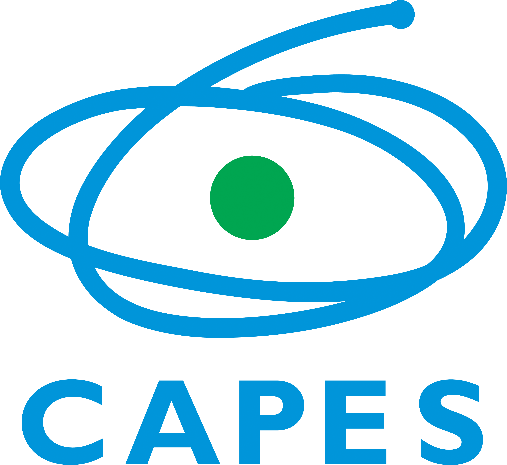

Here you will see all my research projects!
V2IP
Videomonitoramento para Identificação de Pessoas e Veículos
Automated surveillance of video areas of interest can help prevent crimes from recognizing potentially suspicious actions, as well as investigating by analyzing stored videos. Among the main problems faced by video surveillance are the large amount of data to be processed and its quality. This project focuses on the development of scalable and accurate solutions that can process large amounts of data and can be transmitted in low resolution videos.
Scope: International project funded by the Brazilian Ministry of Education through the Coordenação de Aperfeiçoamento de Pessoal de Nível Superior.
Duration: 4 years
Responsability: Participant
V2IP
Videomonitoramento para Identificação de Pessoas e Veículos
Automated surveillance of video areas of interest can help prevent crimes from recognizing potentially suspicious actions, as well as investigating by analyzing stored videos. Among the main problems faced by video surveillance are the large amount of data to be processed and its quality. This project focuses on the development of scalable and accurate solutions that can process large amounts of data and can be transmitted in low resolution videos.
Scope: International project funded by the Brazilian Ministry of Education through the Coordenação de Aperfeiçoamento de Pessoal de Nível Superior.
Duration: 4 years
Responsability: Participant
Some of my other research interests include:
- Cryptography
- Network Security
- Internet of Things (IoT) security
- Design and development of algorithms for computer based simulation, namely of pseudo random number generators and of methods for synthesis of sequences with approximate self-similar structure
- Malware proliferation, behaviour and detection
- Simulation, monitoring, analysis and classification of network traffic